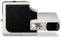

无忌
器材库
全部器材
产品年表
名词百科
榜单
器材库
> 不可换镜头数码相机 > SL300R T*

康泰时
SL300R T*
分类
不可换镜头数码相机
点评
0 条
图片
0 张
评测
0 篇
SL300R T*配备了一块1.5英寸大小的LCD显示屏，3倍光学变焦，2倍数码变焦，最大光圈为f/2.8。
产品类型
不可换镜头数码相机
综合评分
暂无评分
无忌评测
暂无评测
规格参数
网友点评
(0)
产品图 / 样片
(0)
评测文章
(0)
规格总览
发布日期
2003-11-27
停产
是
影像规格
影像传感器
CCD
影像传感器尺寸
1/2.7英寸
总像素
334万
有效像素
317万
影像处理器
RTUNE
静态图像尺寸
2048×1536, 1600×1200, 1280×960, 640×480
静态图像格式
JPEG
画幅比
4:3
短片尺寸
640×480@30/15fps, 320×240@30/15fps, 160×120@30/15fps
短片格式
AVI
镜头和对焦
镜头结构
6片/6组
焦距
5.8mm-17.4mm
等效35mm画幅焦距
38mm-115mm
最大光圈
f/2.8-f/4.7
光学变焦
3倍
数码变焦
2倍
最近对焦距离
60cm, 微距20cm
对焦模式
S-AF, C-AF, MF
手动对焦
支持
曝光控制
测光模式
中央重点测光, 多分区评价测光, 点测光
曝光模式
P（程序自动曝光）, A（光圈优先自动曝光）
场景模式
标准, 运动, 人像, 夜景, 夜间人像, 微距, 远景
快门速度
8 - 1/2000s
曝光补偿
±2EV以1/3EV级调整
ISO感光度
100, 200, 400, 800, 自动
白平衡
日光, 白炽灯, 阴天, 荧光灯, 自动, 预设白平衡
自拍
10秒, 2秒
连拍
3.5 fps
拍摄模式
自动, 长时间曝光, 自拍, 手动对焦
闪光灯
闪光涵盖范围
广角：0.6-2.5m；长焦：0.6-1.8m
取景规格
LCD类型
彩色TFT LCD
LCD尺寸
1.5英寸
LCD像素
11.8万
文件输入/输出
存储卡
SD/SDHC, MMC
数据接口
USB
视频/音频接口
Video 输出 (NTSC/PAL)
配件端口
外接电源插孔
支持打印协议
DPOF
电源
电池
3.7V 锂电池 780 mAh
续航能力
可拍摄约100张
外接电源
电源适配器
外观
颜色
银色
尺寸
100×62.5×16mm
重量
125g
其它
支持语言
中文（简体）, 英语, 日语, 法语, 德语, 西班牙语
工作温度
0-45℃
该产品暂无存档的网友点评
该产品暂无存档的产品图
评测 / 相关文章
该产品暂无存档的评测文章
相关文章
［资讯］Contax SL300R T*
（原站已下线）